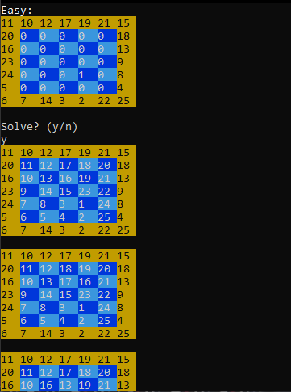
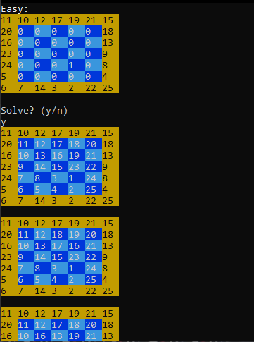

I'm currently working towards my IT Engineering degree at Homs University in Syria, expecting to graduate in 2028.
For three years, I explored various programming languages on SoloLearn, starting with C#, then moving on to Java, and finally focusing on Python, which I studied extensively.
I'm currently working towards my IT Engineering degree at Homs University in Syria, expecting to graduate in 2028.
Also, I'm a student at the Syrian Virtual University, taking the TIC Program (Technical Institution of Computer), expecting to graduate in 2026-2027.
I'm particularly interested in Artificial Intelligence—I believe there's so much potential there and a lot of work to be done.
Alongside my studies, I enjoy developing games as a hobby and hope to make it a key part of my future career.
In case you want to explore my work, I added a Projects page you can visit which contains all of the projects I worked on including the upcoming ones!